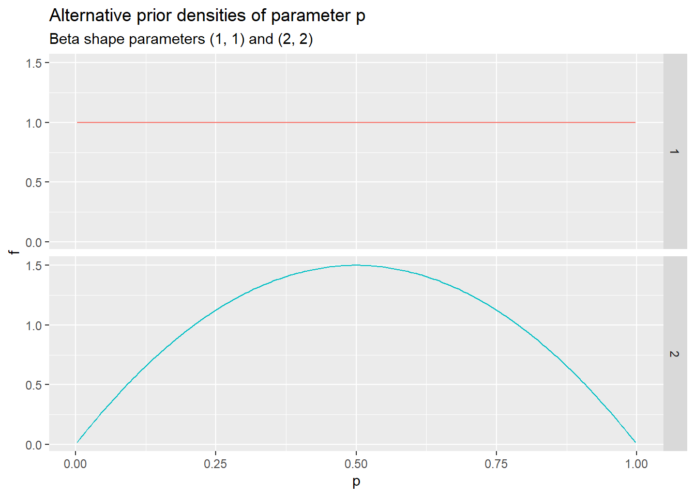

9 The Dirichlet Distribution
9.1 Background
Latent Dirichlet Allocation (LDA) was proposed as a method of topic modeling in a 2003 paper by Blei, Ng, and Jordan1. The method is briefly mentioned in Part 1 of the course. Several course participants requested a more detailed description. This note prepares for the requested response by introducing the Dirichlet and Multinomial distributions.2
9.2 The Multinomial Distribution
Consider a categorical (qualitative) random variable \(X\) that randomly selects one of \(K\) distinct categories \(\{c_1, \ldots, c_K \}\).
\[ \begin{align} X &\in (c_1, \ldots, c_K) \\ \\ p_k &= P(X = c_k) > 0 \\ \\ \sum_{k = 1}^K p_k &= 1 \\ \end{align} \qquad(9.1)\]
Probability vector \(p_{\bullet} = (p_1, \ldots, p_K)\) is thus the probability distribution of \(X\) on \(\{c_1, \ldots, c_K \}\).
If the categories are ordered, we might represent \(X\) numerically as a random index \(k \in \{1, \ldots, K \}\). But for present purposes we suppose the categories are not ordered, and we represent \(X\) as a vector of random indicator variables3.
\[ \begin{align} I_{\bullet} &= (I_1, \ldots, I_K) \\ \\ I_k &= 1 \text{, if } X = c_k \\ I_k &= 0 \text{, if } X \ne c_k \\ \\ I_{\bullet} &= \mathbb{e}_1 = (1, 0, \ldots, 0) \text{, with probability } p_1\\ I_{\bullet} &= \mathbb{e}_2 = (0, 1, \ldots, 0) \text{, with probability } p_2\\ \vdots \\ I_{\bullet} &= \mathbb{e}_K = (0, 0, \ldots, 1) \text{, with probability } p_K \\ \end{align} \qquad(9.2)\]
That is, the random indicator vector \(I_{\bullet}\) selects one of the Euclidean basis vectors \(\mathbb{e}_k \in \mathbb{R}^K\) with probability \(p_k\). Therefore the expected value of \(I_{\bullet}\) equals the vector of category probabilities \(p_{\bullet} = (p_1, \ldots, p_K)\).
\[ \begin{align} E(I_k) &= P(I_k = 1) \\ & = P(X = c_k) \\ & = p_k \\ \\ E(I_{\bullet}) &= (E(I_1), \ldots, E(I_K)) \\ &= (p_1, \ldots, p_K) \\ &= p_{\bullet} \\ \end{align} \qquad(9.3)\]
Now suppose that \((X_1, \ldots, X_n)\) are independent random variables all having the same distribution as \(X\). Corresponding to \(X_{\nu}\) we have an indicator vector that we’ll denote as \(I_{\bullet}^{(\nu)}\). Let \(S_{\bullet}\) denote the sum over the \(n\) indicator vectors \(\{ I_{\bullet}^{(\nu)} \}_{\nu}\).
\[ \begin{align} S_{\bullet} &= \sum_{\nu = 1}^n I_{\bullet}^{(\nu)} \text{, so that } \\ \\ S_k &= \sum_{\nu = 1}^n I_k^{(\nu)} \\ &= \text{ number of } \nu \text{ such that } X_{\nu} = c_k \end{align} \qquad(9.4)\]
For any given set of possible counts \(s_{\bullet} = (s_1, \ldots, s_K)\), that is, of non-negative integers summing to \(n\), and for a given probability vector \(p_{\bullet}\), the probability that \(S_{\bullet} = s_{\bullet}\) is as follows.
\[ \begin{align} P(S_{\bullet} = s_{\bullet} \; | \; p_{\bullet}) &= {n \choose s_{\bullet}} \prod_{k = 1}^K p_k^{s_k} \end{align} \qquad(9.5)\]
where
\[ \begin{align} {n \choose s_{\bullet}} &= \frac{n!}{s_1! s_2! \cdots s_K!} \end{align} \qquad(9.6)\]
gives the number of assignments of \(n\) objects to the \(K\) categories such that each category \(c_k\) receives the prescribed number \(s_k\) of objects.
The probability distribution of \(S_{\bullet}\) is called the multinomial distribution.
For \(K = 2\), this simplifies to the binomial distribution, with parameters \((n, p)\), where \((p_1, p_2) = (p, \; 1 - p)\). If \(\nu\) denotes the observed number of succeses in \(n\) Bernoulli trials, then \((s_1, s_2) = (\nu, \; n - \nu)\).
9.3 Bayesian Inference
The Bayesian approach to statistical estimation provides a framework for representing the state of knowledge, or degree of uncertainty, about a model parameter before and after collecting relevant data.
As an example consider the binomial distribution mentioned above, where we are estimating the probability \(p\) of success based on a sequence of \(n\) independent Bernoulli trials. Following the notation above, we use two dependent indicator random variables \((I_1, I_2)\) to represent success and failure respectively, with \(I_2 = 1- I_1\), and with \((p_1, p_2) = (p, \; 1-p)\).
Prior to observing the sequence of Bernoulli trials, we might represent the state of information about \(p\) as a uniform distribution, so that each possible value of \(p \in [0, 1]\) is deemed equally likely. Alternatively, if the Bernoulli sequence represents the outcomes of tossing a coin that is presumed fair, or nearly fair, we might represent that information as a probability distribution having a mode at the value \(p = 1/2\).
More specifically, it turns out to be mathematically convenient to represent prior information about probability \(p\) as a member of the beta family of probability distributions over the unit interval. The uniform distribution is the special case of setting beta shape parameters to the values \((1, 1)\). Alternatively setting the shape parameters to \((2, 2)\) gives a density function symmetric about the mode at \(p = 1/2\).
In general, a beta distribution having shape parameters \((\alpha, \beta)\) has the following density function.
\[ \begin{align} P(p) &= \frac{\Gamma(\alpha + \beta)}{\Gamma(\alpha) \Gamma(\beta)} p^{\alpha - 1} (1-p)^{\beta -1 } \\ \\ & \text{with } \alpha > 0 \text{, and } \beta > 0 \end{align} \qquad(9.7)\]
Suppose now that we adopt the distribution just mentioned, \(\mathcal{Beta}(\alpha, \beta)\), as the prior distribution of success probability \(p\), for some specified positive parameter values \((\alpha, \beta)\). We then observe \(s_1\) successes and \(s_2\) failures from \(n = s_1 + s_2\) independent Bernoulli trials. Based on these observations we update the prior distribution to form the posterior distribution of \(p\) as follows.
\[ \begin{align} P(p \; | \; S_{\bullet} = s_{\bullet}) &= \frac{P(p, \; S_{\bullet}=s_{\bullet})}{P(S_{\bullet}=s_{\bullet})} \\ &= \frac{P(S_{\bullet}=s_{\bullet} \; | \; p) \; P(p)}{P(S_{\bullet}=s_{\bullet})} \\ \end{align} \qquad(9.8)\]
Note that
\[ \begin{align} P(S_{\bullet}=s_{\bullet} \; | \; p) \; P(p) &= {n \choose s_1} p^{s_1} (1 - p)^{n - s_1} \times \frac{\Gamma(\alpha + \beta)}{\Gamma(\alpha) \Gamma(\beta)} p^{\alpha - 1} (1-p)^{\beta -1 } \\ &= {n \choose s_1} \frac{\Gamma(\alpha + \beta)}{\Gamma(\alpha) \Gamma(\beta)} p^{s_1 + \alpha - 1} (1 - p)^{n - s_1 + \beta - 1} \\ &= \frac{(s_1 + s_2)!}{s_1! s_2!} \frac{\Gamma(\alpha + \beta)}{\Gamma(\alpha) \Gamma(\beta)} p^{\alpha + s_1 - 1} (1 - p)^{\beta + s_2 - 1} \\ \end{align} \qquad(9.9)\]
so that
\[ \begin{align} P(S_{\bullet} = s_{\bullet}) &= \int_0^1 P(S_{\bullet}=s_{\bullet} \; | \; p) \; P(p) \,dp \\ &= \frac{(s_1 + s_2)!}{s_1! s_2!} \frac{\Gamma(\alpha + \beta)}{\Gamma(\alpha) \Gamma(\beta)} \int_0^1 p^{\alpha + s_1 - 1} (1 - p)^{\beta + s_2 - 1} \,dp \\ &= \frac{(s_1 + s_2)!}{s_1! s_2!} \frac{\Gamma(\alpha + \beta)}{\Gamma(\alpha) \Gamma(\beta)} \frac{\Gamma(\alpha + s_1)\Gamma(\beta + s_2)}{\Gamma(\alpha + \beta + s_1 + s_2)} \\ \end{align} \qquad(9.10)\]
Consequently, the ratio of the last two expressions gives
\[ \begin{align} P(p \; | \; S_{\bullet} = s_{\bullet}) &= \frac{P(p, \; S_{\bullet}=s_{\bullet})}{P(S_{\bullet}=s_{\bullet})} \\ &= \frac{P(S_{\bullet}=s_{\bullet} \; | \; p) \; P(p)}{P(S_{\bullet}=s_{\bullet})} \\ &= \frac{\Gamma(\alpha + \beta + s_1 + s_2)}{\Gamma(\alpha + s_1) \Gamma(\beta + s_2)} p^{\alpha + s_1 - 1} (1-p)^{\beta + s_2 -1} \end{align} \qquad(9.11)\]
That is, the posterior distribution is \(\mathcal{Beta}(\alpha + s_1, \beta + s_2)\).
This is the “mathematical convenience” previously alluded to: the prior and posterior probability distributions of \(p\) belong to the same family of parametric probability distributions, namely the \(\mathcal{Beta}\) family. For this reason the \(\mathcal{Beta}\) family is said to be conjugate to the binomial family.
9.4 The Dirichlet Probability Distribution
9.4.1 Definition
The binomial distribution is a special case of the multinomial distribution in which the number of categories \(K\) is equal to 2. (In the discussion above we referred to the categories as success and failue, respectively.) More generally, for a fixed integer \(K \ge 2\), the family of distributions conjugate to the multinomial family of distributions over \(K\) categories is the following Dirichlet family.
\[ \begin{align} P(p_{\bullet}) &= \frac{\Gamma(\alpha_1+ \cdots + \alpha_K)}{\Gamma(\alpha_1) \times \cdots \times \Gamma(\alpha_K)} \prod_{k = 1}^K p_k^{\alpha_k - 1} \\ \\ & \text{with } \alpha_k > 0 \text{ for } k \in \{1, \ldots, K \} \end{align} \qquad(9.12)\]
This is the \(\mathcal{Dirichlet}(\alpha_{\bullet})\) distribution over \(p_{\bullet}\), where probability vector \(p_{\bullet}\) ranges over the \(K - 1\) dimesional simplex such that each component \(p_k\) is non-negative and all the components \((p_1, \cdots, p_K)\) together sum to unity.
9.4.2 Special Case: \(\alpha_k = \frac{\alpha_{+}}{K}\)
We will denote the sum of the components of \(\alpha_{\bullet} = (\alpha_1, \ldots, \alpha_K)\) as \(\alpha_{+}\).4
\[ \begin{align} \alpha_{+} &= \sum_{k = 1}^K \alpha_k \\ \end{align} \qquad(9.13)\]
Consider the special case in which all the components of \(\alpha_{\bullet}\) have the same value
\[ \begin{align} \alpha_k &= \frac{\alpha_{+}}{K} \\ & \text{for } k \in \{1, \dots, K \} \end{align} \qquad(9.14)\]
The probability distribution is then symmetric in the components of \(p_{\bullet}\), and \(\alpha_{+}\) is referred to as the concentration parameter. The uniform distribution over the domain of \(p_{\bullet}\) (that is, over the \(K - 1\) dimensional simplex) is obtained by setting \(\alpha_{+} = K\). Setting \(\alpha_{+} > K\) concentrates the distribution around the centroid
\[ \begin{align} p_{\textbf{ctr}} &= (\frac{1}{K}, \ldots, \frac{1}{K}) \\ \end{align} \qquad(9.15)\]
For example the previous figure shows two alternative concentrations of the symmetric beta density function of scalar parameter \(p\), where \((p_1, p_2) = (p, \; 1 - p)\), and \(p_{\textbf{ctr}} = (\frac{1}{2}, \frac{1}{2})\).
Alternatively, setting \(\alpha_{+} < K\) concentrates the distribution away from the centroid toward the corners of the simplex.
9.4.3 Posterior Distribution
Recall that \(S_{\bullet}\) constructed above has a multinomial distribution if it can be represented as the sum of \(n\) independent trials, each trial yielding one of the Euclidean basis vectors \(\mathbb{e}_k\) with probability \(p_k\). Then \(S_k\), the \(k^{th}\) component of \(S_{\bullet}\), counts the number of trials yielding \(\mathbb{e}_k\).
Now suppose that \(p_{\bullet}\) has prior distribution \(\mathcal{Dirichlet}(\alpha_{\bullet})\), for some specification of \(\alpha_{\bullet}\), and that the observed outcome of the \(n\) trials is a given vector \(s_{\bullet}\) of counts. What is the posterior distribution of \(p_{\bullet}\) given the observation \(S_{\bullet} = s_{\bullet}\)? This turns out to be
\[ \begin{align} \{ p_{\bullet} \; | \; s_{\bullet} \} &\sim \mathcal{Dirichlet}(\alpha_{\bullet} + s_{\bullet}) \end{align} \qquad(9.16)\]
That is, the Dirichlet family is conjugate to the multinomial family, just as the beta family is conjugate to the binomial family.